Longitudinal System Suitability Monitoring and Quality Control with MSstatsQC
Eralp Dogu eralp.dogu@gmail.com
Sara Taheri srtaheri66@gmail.com
Olga Vitek o.vitek@neu.edu
2026-02-07
MSstatsQC.RmdIntroduction to MSstatsQC
Liquid chromatography coupled with mass spectrometry (LC-MS) is the gold standard for peptide quantification in complex matrices. However, achieving reproducible results across different laboratories and runs requires rigorous monitoring. This involves two critical components: System Suitability Tests (SST) to verify instrumentation performance, and Quality Control (QC) to ensure in-process quality assurance.
While the longitudinal nature of SST and QC data is well recognized, traditional statistical methods often fall short in detecting subtle drifts. MSstatsQC addresses this gap by translating modern Statistical Process Control (SPC) methods—such as simultaneous and time-weighted control charts and change point analysis—into the context of LC-MS experiments.
Key Features & Innovations
MSstatsQC-ML (Machine Learning): The latest release introduces a cutting-edge machine learning approach optimized for decision-making in complex standard mixtures. By combining supervised tree-based classifiers with experimental design strategies,
MSstatsQC-MLcan simulate unobserved, suboptimal MS runs. This allows for the training of robust models even with limited failure data, enabling users to interpret the root causes of performance loss and design preventive actions.Versatility & Compatibility: The package supports data processing for missing values (v2.0) and includes a converter function for the standardized mzQC format.
Proven Application: The methods are demonstrated using diverse datasets, including SRM-based system suitability data (CPTAC Study 9.1, Site 54), DDA and SRM-based QC datasets (QCloud system), and DIA quantification for iRT peptides (QuiC system).
This vignette summarizes the functionalities of the
MSstatsQC package, which is available as a stand-alone R
package or for integration into automated pipelines.
Installation
Note on System Requirements: The machine learning
module (MSstatsQC-ML) relies on the h2o
package, which requires Java (JDK 8 or higher) to be
installed on your system. Please ensure Java is installed before
proceeding.
To install the stable version from Bioconductor:
if (!requireNamespace("BiocManager", quietly = TRUE))
install.packages("BiocManager")
BiocManager::install("MSstatsQC")Input
In order to analyze QC/SST data in MSstatsQC, input data
must be a .csv file in a “long” format with related columns. This is a
common data format that can be generated from spectral processing tools
such as Skyline and Panorama AutoQC..
The recommended format includes Acquired Time,
Peptide name, Annotations and data for any QC
metrics such as Retention Time,
Total Peak Area and Mass Accuracy etc. Each
input file should include Acquired Time,
Peptide name and Annotations. After the
Annotations column user can parse any metric of interest
with a proper column name.
AcquiredTime: This column shows the acquired time of the QC/SST sample in the format of MM/DD/YYYY HH:MM:SS AM/PM.Precursor: This column shows information about Precursor id. Statistical analysis will be conducted for each unique label in this column.Annotations: Annotations are free-text information given by the analyst about each run. They can be information related to any special cause or any observations related to a particular run. Annotations are carried in the plots provided byMSstatsQCinteractively.
(d)-(f) RetentionTime, TotalPeakArea,
FWHM, MassAccuracy, and
PeakAssymetry, and other metrics: These columns define a
feature of a peak for a specific peptide.
The example dataset is shown below. Each row corresponds to a single time point. Additionally, other inputs such as predefined limits or guide sets are discussed in further steps.
MSnbaseToMSstatsQC functions
MSnbaseToMSstatsQC function converts
MSnbase output to MSstatQC format using
QCmetrics objects.
Example
MSnbaseToMSstatsQC(msfile)Data processing
Data is processed with DataProcess() function to ensure
data sanity and efficiently use core and summary MSstatsQC
funtions. MSstatsQC uses a data validation method where
slight variations in column names are compansated and converted to the
standard MSstatsQC format. For example, our data validation
function converts column names like Best.RT,
best retention time, retention time,
rt and best ret into
BestRetentionTime. This conversion also deals with
case-sensitive typing.
Arguments
-
data: comma-separated (.csv), metric file. It should contain a “Precursor” column and the metrics columns. It should also include “Annotations” for each observation.
Example
data <- DataProcess(data)
MSstatsQC core functions: control charts
The fuction XmRChart() is used to generate individual
(X) and moving range (mR), and the function CUSUMChart() is
used to construct cumulative sum for mean (CUSUMm) and cumulative sum
for variability (CUSUMv) control charts for each metric. As a follow up
change point estimation procedure ChangePointEstimator can
be used.
Metrics (e.g. retention time and peak area) and peptides are chosen
within all core functions with ‘metric’ and ‘peptide’ arguments.
MSstatsQC can handle any metrics of interest. User needs to
create data columns just after Annotations to import
metrics into MSstatsQC successfully.
Predefined limits are commonly used in system sutiability monitoring and quality control studies. If the mean and variability of a metric is well known, they can be defined using ‘selectMean’ and ‘selectSD’ arguments in core plot functions (e.g. XmRplots function). For example, if mean of retention time is 28.5 minutes, standard deviation is 1 minutes and X chart is used for peptide LVNELTEFAK, we use XmRplot function as follows.
The true values of mean and variability of a metric is typically unknown, and their estimates are obtained from a guide set of high quality runs. Generally, a data gathering and parameter estimation step is required. Within that phase, control limits are obtained to test the hypothesis of statistical control. These thresholds are selected to ensure a specified type I error probability (e.g. 0.0027). Constructing control charts and real time evaluation are considered after achieving this phase. Guide sets are defined with ‘L’ and ‘U’ arguments. For example, if retention time of a peptide is monitored and first 20 observations of the dataset are used as a guide set, a plot is constructed as follows.
MSstatsQC core functions: XmRChart()
Arguments
-
data: comma-separated (.csv), metric file. It should contain a “Precursor” column and the metrics columns. It should also include “Annotations” for each observation. -
peptide: the name of precursor of interest. -
L: lower bound of the guide set. -
U: upper bound of the guide set. -
metric: the name of metric of interest. -
normalization: TRUE if data is standardized. -
ytitle: the y-axis title of the plot. The x-axis title is by default “Time : name of peptide” -
type: the type of the control chart. Two values can be assigned, “mean” or “dispersion”. Default is “mean” -
selectMean: the mean of a metric. It is used when mean is known. It is NULL when mean is not known. The default is NULL. -
selectSD: the standard deviation of a metric. It is used when standard deviation is known. It is NULL when mean is not known. The default is NULL.
Example
# An X chart when a guide set (1-20 runs) is used to monitor the mean of retention time
XmRChart(data, peptide = "TAAYVNAIEK", L = 1, U = 20, metric = "BestRetentionTime", normalization = FALSE, ytitle = "X Chart : retention time", type = "mean", selectMean = NULL, selectSD = NULL)
# An X chart when a guide set (1-20 runs) is used to monitor the mean of total peak area
XmRChart(data, peptide = "TAAYVNAIEK", L = 1, U = 20, metric = "TotalArea", normalization = FALSE, ytitle = "X Chart : peak area", type = "mean", selectMean = NULL, selectSD = NULL)
# An mR chart when a guide set (1-20 runs) is used to monitor the variability of total peak area
XmRChart(data, peptide = "TAAYVNAIEK", L = 1, U = 20, metric = "TotalArea", normalization = TRUE, ytitle = "mR Chart : peak area", type = "variability", selectMean = NULL, selectSD = NULL)
# An mR chart when a guide set (1-20 runs) is used to monitor the variability of retention time
XmRChart(data, peptide = "TAAYVNAIEK", L = 1, U = 20, metric = "BestRetentionTime", normalization = TRUE, ytitle = "mR Chart : retention time", type = "variability", selectMean = NULL, selectSD = NULL)
# Mean and standard deviation of LVNELTEFAK is known
XmRChart(data, "LVNELTEFAK", metric = "BestRetentionTime", selectMean = 28.5, selectSD = 0.5)
# Mean and standard deviation of LVNELTEFAK is known
XmRChart(data, "LVNELTEFAK", metric = "BestRetentionTime", selectMean = 28.5, selectSD = 0.5)
MSstatsQC core functions:
CUSUMChart()
Arguments
-
data: comma-separated (.csv), metric file. It should contain a “Precursor” column and the metrics columns. It should also include “Annotations” for each observation. -
peptide: the name of precursor of interest. -
L: lower bound of the guide set. -
U: upper bound of the guide set. -
metric: the name of metric of interest. -
normalization: TRUE if data is standardized. -
ytitle: the y-axis title of the plot. The x-axis title is by default “Time : name of peptide” -
type: the type of the control chart. Two values can be assigned, “mean” or “dispersion”. Default is “mean” -
referenceValue: the value that is used to tune the control chart for a proper shift size. Recommended setting is 0.5 for standardized data. -
decisionInterval: the threshold to detect an out-of-control observation. Recommended setting is 5 for standardized data. -
selectMean: the mean of a metric. It is used when mean is known. It is NULL when mean is not known. The default is NULL. -
selectSD: the standard deviation of a metric. It is used when standard deviation is known. It is NULL when mean is not known. The default is NULL.
MSstatsQC core functions:
ChangePointEstimator()
Follow-up change point analysis is helpful to identify the time of a
change for each peptide and metric. ChangePointEstimator()
function is used for the analysis. This function is one of the core
functions and uses the same arguments. We recommend using this function
after control charts generate an out-of-control observation. For
example, retention time of TAAYVNAIEK increases over time as CUSUMm
statistics increases steadily after the 20th time point. User can
follow-up with ChangePointEstimator() function to find the
exact time of retention time drift.
Arguments
-
data: comma-separated (.csv), metric file. It should contain a “Precursor” column and the metrics columns. It should also include “Annotations” for each observation. -
peptide: the name of precursor of interest. -
L: lower bound of the guide set. -
U: upper bound of the guide set. -
metric: the name of metric of interest. -
normalization: TRUE if data is standardized. -
ytitle: the y-axis title of the plot. The x-axis title is by default “Time : name of peptide” -
type: the type of the control chart. Two values can be assigned, “mean” or “dispersion”. Default is “mean” -
selectMean: the mean of a metric. It is used when mean is known. It is NULL when mean is not known. The default is NULL. -
selectSD: the standard deviation of a metric. It is used when standard deviation is known. It is NULL when mean is not known. The default is NULL.
Example
# Retention time >> first 20 observations are used as a guide set
XmRChart(data, "TAAYVNAIEK", metric = "BestRetentionTime", type = "mean", L = 1, U = 20)
ChangePointEstimator(data, "TAAYVNAIEK", metric = "BestRetentionTime", type = "mean", L = 1, U = 20)We don’t recommend using this function when all the observations are within control limits. In the case of retention time monitoring of LVNELTEFAK, there is no need to further analyse change point.
The time of a variability change can be analyzed with the same
fucntion. For example, retention time of YSTDVSVDEVK experiences a drift
in the mean of retention time and variability of retention time
increases simultaneously. In this case,
ChangePointEstimator() can be used to identify exact times
of both changes.
Example
# Retention time >> first 20 observations are used as a guide set
XmRChart(data, "YSTDVSVDEVK", metric = "BestRetentionTime", type = "mean", L = 1, U = 20)
ChangePointEstimator(data, "YSTDVSVDEVK", metric = "BestRetentionTime", type = "variability", L = 1, U = 20)
MSstatsQC summary functions: river and radar plots
RiverPlot() and RadarPlot() functions are
the summary functions used in MSstatsQC. They are used to
aggregate results over all analytes for X and mR charts or CUSUMm and
CUSUMv charts. method argument is used to define the method
where the results for multiple peptides are aggregated. For example, if
user would like to aggregate information gathered from the X charts of
retention time for all analytes, upper panel of RiverPlot()
show for the increases and decreases in retention time. Next,
RadarPlot() are used to find out which peptides are
affected by the problem.
If the mean and standard deviation is known, summary functions uses
listMean and listSD arguments. For example, if
user monitors retention time and peak assymetry and mean and standard
deviations of these metrics are known, arguments will require entering a
vector for means and another vector for standard deviations.
Example
# Retention time >> first 20 observations are used as a guide set
RiverPlot(data = S9Site54, L = 1, U = 20, method = "XmR")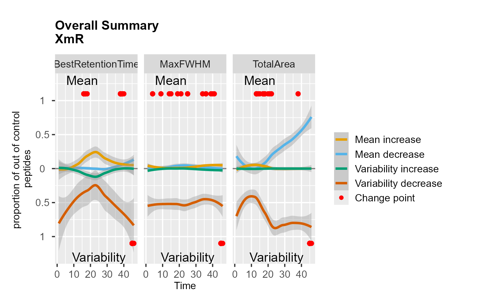
RiverPlot(data = S9Site54, L = 1, U = 20, method = "CUSUM")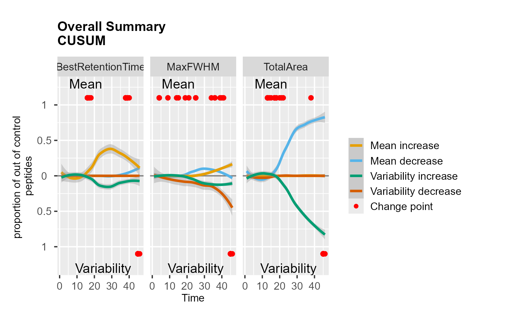
RadarPlot(data = S9Site54, L = 1, U = 20, method = "XmR")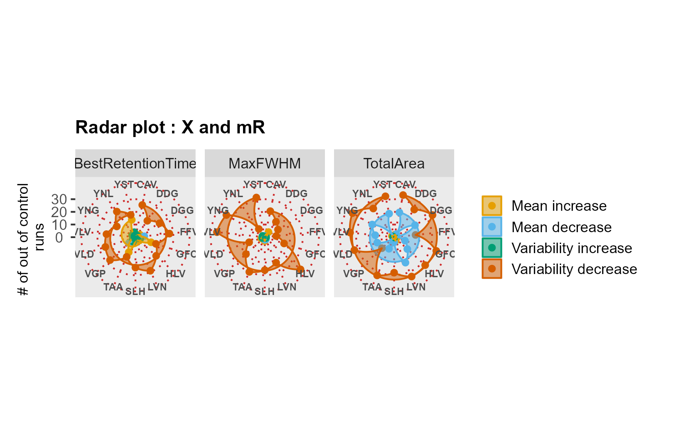
RadarPlot(data = S9Site54, L = 1, U = 20, method = "CUSUM")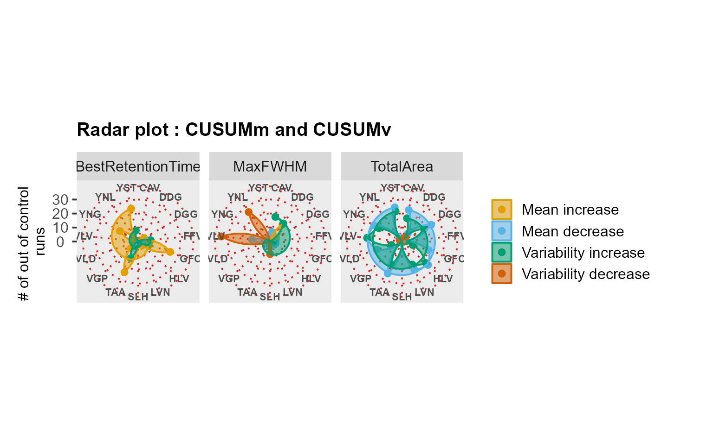
MSstatsQC summary functions: decision map
DecisionMap() functions another summary function used in
MSstatsQC. It is used to compare aggregated results over
all analytes for a certain method such as XmR charts with the user
defined criteria. Firstly, user defines the performance criteria and run
DecisionMap() function to visualize overall performance.
This function uses all the arguments of summary plots listed previously.
Additionally, the following arguments are used
Arguments
-
method: the name of the method prefered. It is either “CUSUM” or “XmR”` interest. -
peptideThresholdRed: a threshold that marks percentage of out-of-control peptides. if the percentage is above this threshold, the color is red meaning fail. Default is 0.7. -
peptideThresholdYellow: a threshold that marks percentage of out-of-control peptides. if the percentage within this threshold andpeptideThresholdRed, the color is yellow meaning warning. Default is 0.5.
Example
# A decision map for Site 54 can be generated using the following script
# Retention time >> first 20 observations are used as a guide set
DecisionMap(data,
method = "XmR", peptideThresholdRed = 0.25, peptideThresholdYellow = 0.10,
L = 1, U = 20, type = "mean", title = "Decision map", listMean = NULL, listSD = NULL
)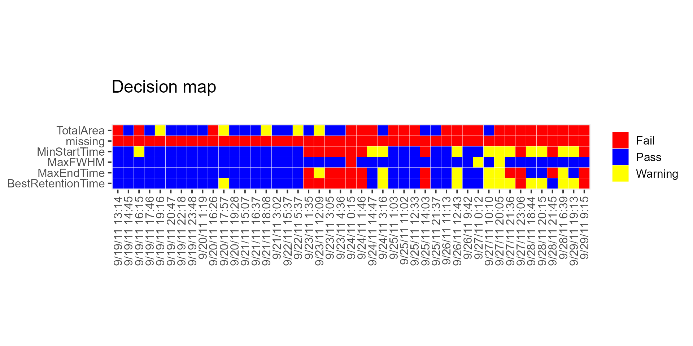
Use case: longitudinal profiling of DDA with missing values
We analyzed the QCloudDDA dataset. The dataset had many missing values and MSstatsQC 2.0 processed these missing values and generated control charts and summary plots for longitudinal performance assessment.
mydata <- DataProcess(MSstatsQC::QCloudDDA)
# Creating a missing data map
MissingDataMap(mydata)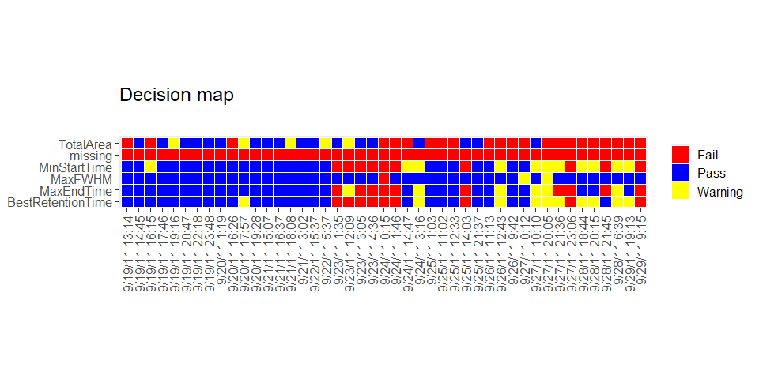
XmRChart(mydata, "EACFAVEGPK", metric = "missing", type = "mean", L = 1, U = 15)
mydata <- RemoveMissing(mydata)
RiverPlot(mydata[, -9], L = 1, U = 15, method = "XmR")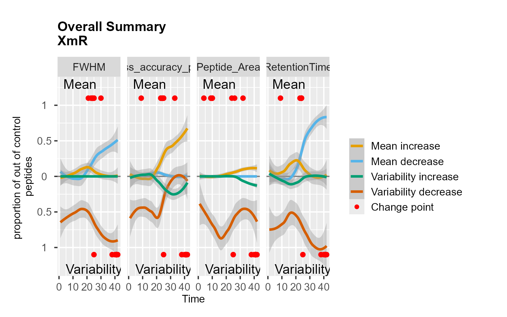
RadarPlot(mydata[, -9], L = 1, U = 15, method = "XmR")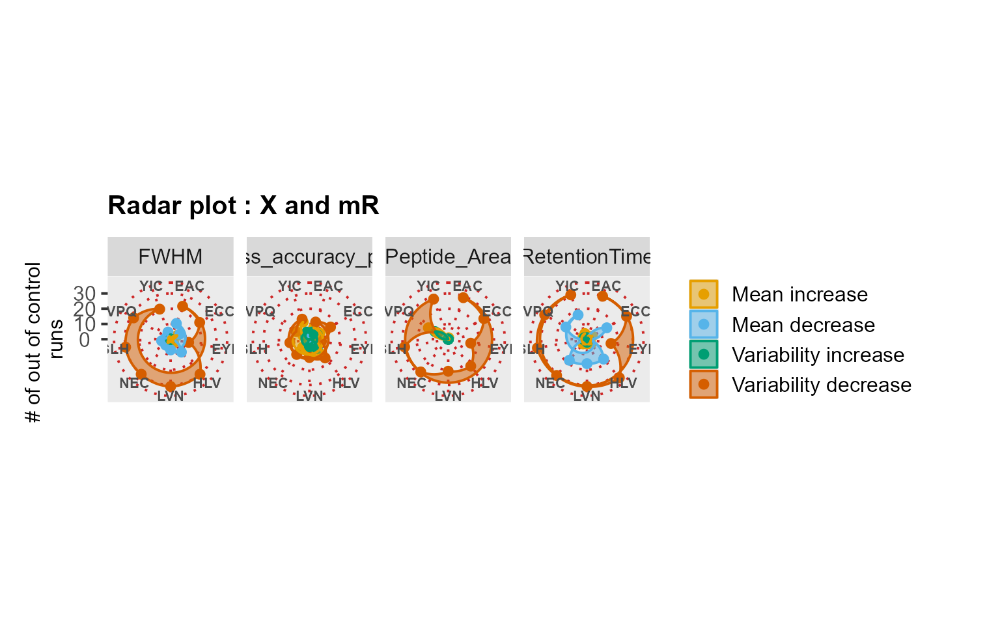
mydata <- DataProcess(MSstatsQC::QCloudDDA)
# Creating a missing data map
MissingDataMap(mydata)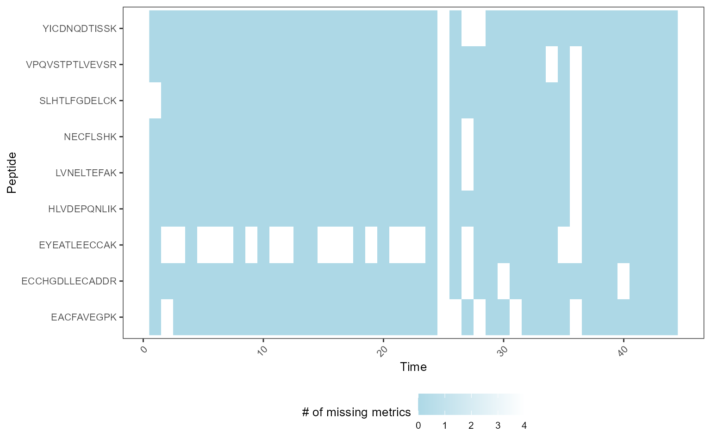
# Creating an X chart for missing counts
XmRChart(mydata, "EACFAVEGPK", metric = "missing", type = "mean", L = 1, U = 15)
# Removing missing values and analyzing the data
mydata <- RemoveMissing(mydata)
RiverPlot(mydata[, -9], L = 1, U = 15, method = "XmR")
RadarPlot(mydata[, -9], L = 1, U = 15, method = "XmR") # Use case: longitudinal profiling of QC with iRT peptides
# Use case: longitudinal profiling of QC with iRT peptides
We analyzed the QuiCDIA dataset which included longitudinal profiles of 11 iRT peptides. The data comprised two DIA experiments acquired in duplicate with 11 days in between the two measurement sequences.
# Checking missing values and analyzing the data
MissingDataMap(MSstatsQC::QuiCDIA)
RiverPlot(data = QuiCDIA, L = 1, U = 20, method = "XmR")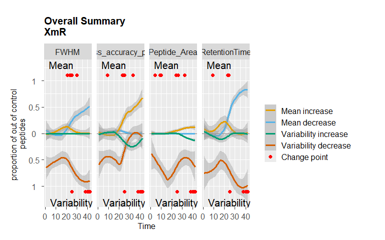
RadarPlot(data = QuiCDIA, L = 1, U = 20, method = "XmR")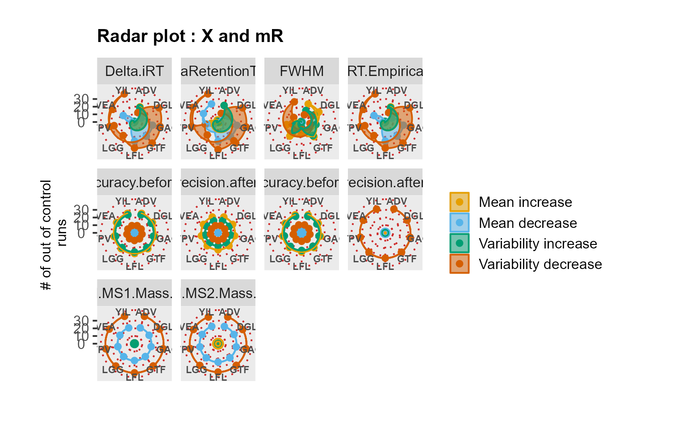
Use case: longitudinal profiling of QC from an SRM experiment
Following the implementation in Dogu et al. (2017), we analyzed the QCloudSRM dataset. This dataset was previously evaluated by the experts as well-performing for all peptides and metrics, except for the outlying peptide TCVADESHAGCEK.
# Checking missing values and analyzing the data
MissingDataMap(MSstatsQC::QCloudSRM)
RiverPlot(data = QCloudSRM, L = 1, U = 20, method = "CUSUM")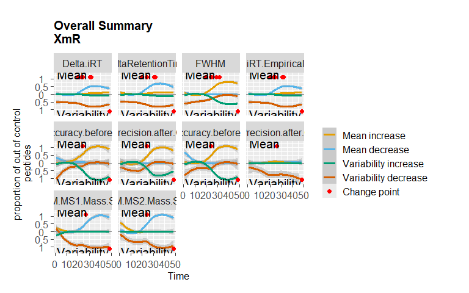
RadarPlot(data = QCloudSRM, L = 1, U = 20, method = "CUSUM")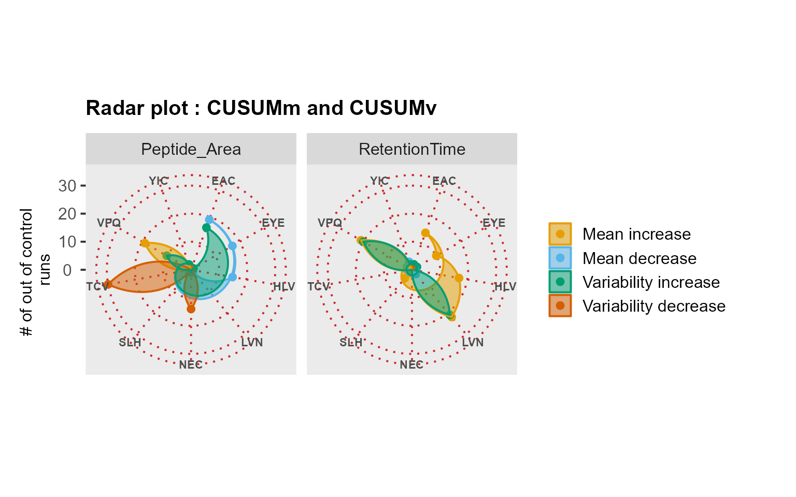
MSstatsQC-ML functions: MSstatsQC-ML.trainR() and
MSstatsQC.deployR()
MSstatsQC-ML.trainR() and
MSstatsQC.deployR() functions are the two main functions to
use machine learning approach proposed in this package. The two packages
needs to be used in an order. The user first needs to train a model with
the first function (trainR) and than use this function to predict labels
per QC run using the second function (deployR). The first function
returns a trained RF model from the guide set automating split, feature
engineering, hypertuning and finalizing training based on
train/validation/test datasets. It requires a simulation size to
generate synthetic runs with random artifacts of deterioration.
Deployment function labels each peptide per run with a probability of
failure output that is defined to evaluate quality of a run.
Example
if (requireNamespace("h2o", quietly = TRUE)) {
tryCatch({
h2o::h2o.init(nthreads = -1)
}, error = function(e) {
warning("H2O did not start.")
})
}
#>
#> H2O is not running yet, starting it now...
#>
#> Note: In case of errors look at the following log files:
#> C:\Users\Dogu\AppData\Local\Temp\RtmpiuuRmc\file55584fc46978/h2o_Dogu_started_from_r.out
#> C:\Users\Dogu\AppData\Local\Temp\RtmpiuuRmc\file55586546d8a/h2o_Dogu_started_from_r.err
#>
#>
#> Starting H2O JVM and connecting: Connection successful!
#>
#> R is connected to the H2O cluster:
#> H2O cluster uptime: 4 seconds 756 milliseconds
#> H2O cluster timezone: Asia/Istanbul
#> H2O data parsing timezone: UTC
#> H2O cluster version: 3.44.0.3
#> H2O cluster version age: 2 years, 1 month and 18 days
#> H2O cluster name: H2O_started_from_R_Dogu_mwl453
#> H2O cluster total nodes: 1
#> H2O cluster total memory: 3.40 GB
#> H2O cluster total cores: 12
#> H2O cluster allowed cores: 12
#> H2O cluster healthy: TRUE
#> H2O Connection ip: localhost
#> H2O Connection port: 54321
#> H2O Connection proxy: NA
#> H2O Internal Security: FALSE
#> R Version: R version 4.5.1 (2025-06-13 ucrt)
utils::data("S9Site54", package = "MSstatsQC", envir = environment())
S9Site54.dataML <- DataProcess(S9Site54[, -c(4, 5, 8)])
colnames(S9Site54.dataML)[1] <- c("idfile")
colnames(S9Site54.dataML)[2] <- c("peptide")
S9Site54.dataML$peptide <- as.factor(S9Site54.dataML$peptide)
S9Site54.dataML$idfile <- as.numeric(S9Site54.dataML$idfile)
S9Site54.dataML <- within(S9Site54.dataML, rm(Annotations, missing))
guide.set <- dplyr::filter(S9Site54.dataML, idfile <= 20)
guide.set <- as.data.frame(guide.set)
Test.set <- S9Site54.dataML
rf_model = MSstatsQC::MSstatsQC.ML.trainR(guide.set, sim.size = 10)
#> Connection successful!
#>
#> R is connected to the H2O cluster:
#> H2O cluster uptime: 8 seconds 243 milliseconds
#> H2O cluster timezone: Asia/Istanbul
#> H2O data parsing timezone: UTC
#> H2O cluster version: 3.44.0.3
#> H2O cluster version age: 2 years, 1 month and 18 days
#> H2O cluster name: H2O_started_from_R_Dogu_mwl453
#> H2O cluster total nodes: 1
#> H2O cluster total memory: 3.40 GB
#> H2O cluster total cores: 12
#> H2O cluster allowed cores: 12
#> H2O cluster healthy: TRUE
#> H2O Connection ip: localhost
#> H2O Connection port: 54321
#> H2O Connection proxy: NA
#> H2O Internal Security: FALSE
#> R Version: R version 4.5.1 (2025-06-13 ucrt)
#>
#> | | | 0% | |======================================================================| 100%
#> Connection successful!
#>
#> R is connected to the H2O cluster:
#> H2O cluster uptime: 20 seconds 587 milliseconds
#> H2O cluster timezone: Asia/Istanbul
#> H2O data parsing timezone: UTC
#> H2O cluster version: 3.44.0.3
#> H2O cluster version age: 2 years, 1 month and 18 days
#> H2O cluster name: H2O_started_from_R_Dogu_mwl453
#> H2O cluster total nodes: 1
#> H2O cluster total memory: 3.40 GB
#> H2O cluster total cores: 12
#> H2O cluster allowed cores: 12
#> H2O cluster healthy: TRUE
#> H2O Connection ip: localhost
#> H2O Connection port: 54321
#> H2O Connection proxy: NA
#> H2O Internal Security: FALSE
#> R Version: R version 4.5.1 (2025-06-13 ucrt)
#> | | | 0% | |======================================================================| 100%
results <- MSstatsQC.ML.deployR(Test.set, guide.set, rf_model)
#> | | | 0% | |======================================================================| 100%
#> | | | 0% | |======================================================================| 100%
#> | | | 0% | |======================================================================| 100%
#> | | | 0% | |======================================================================| 100%
#> | | | 0% | |======================================================================| 100%
#> | | | 0% | |======================================================================| 100%
#> | | | 0% | |======================================================================| 100%
#> | | | 0% | |======================================================================| 100%
#> | | | 0% | |======================================================================| 100%
#> | | | 0% | |======================================================================| 100%
#> | | | 0% | |======================================================================| 100%
#> | | | 0% | |======================================================================| 100%
#> | | | 0% | |======================================================================| 100%
#> | | | 0% | |======================================================================| 100%
#> | | | 0% | |======================================================================| 100%
#> | | | 0% | |======================================================================| 100%
#> | | | 0% | |======================================================================| 100%
#> | | | 0% | |======================================================================| 100%
#> | | | 0% | |======================================================================| 100%
#> | | | 0% | |======================================================================| 100%
#> | | | 0% | |======================================================================| 100%
#> | | | 0% | |======================================================================| 100%
#> | | | 0% | |======================================================================| 100%
#> | | | 0% | |======================================================================| 100%
#> | | | 0% | |======================================================================| 100%
#> | | | 0% | |======================================================================| 100%
#> | | | 0% | |======================================================================| 100%
#> | | | 0% | |======================================================================| 100%
#> | | | 0% | |======================================================================| 100%
#> | | | 0% | |======================================================================| 100%
print(results$DecisionMap)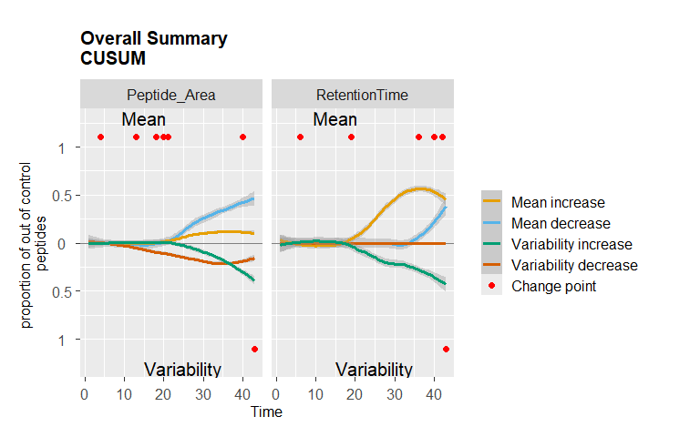
for (p in results$InterpretationPlots) {
print(p)
}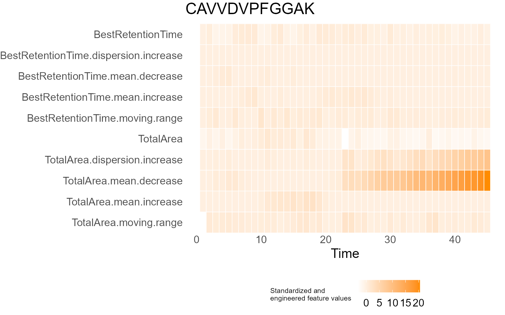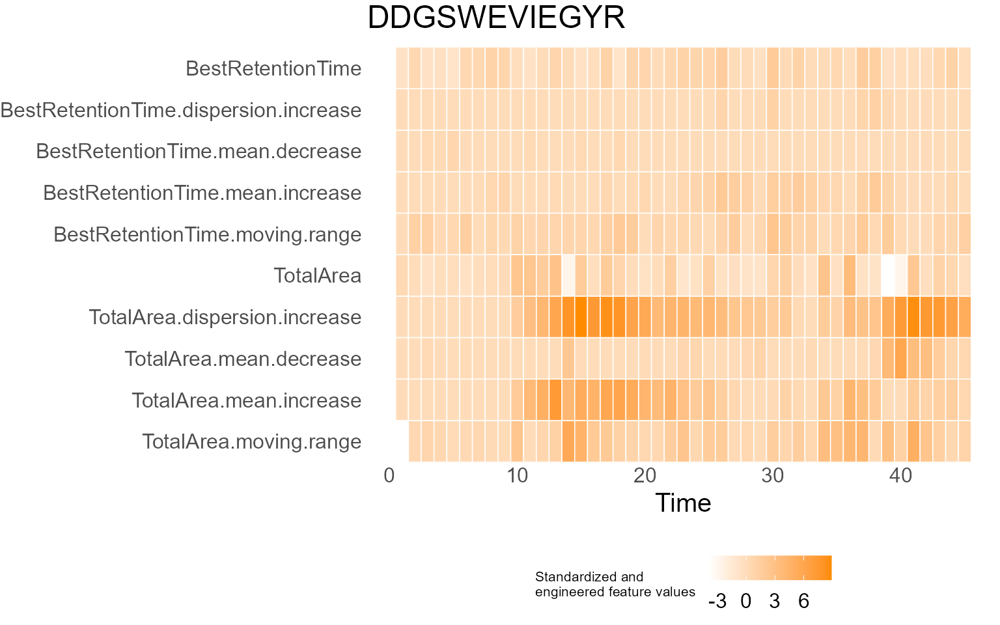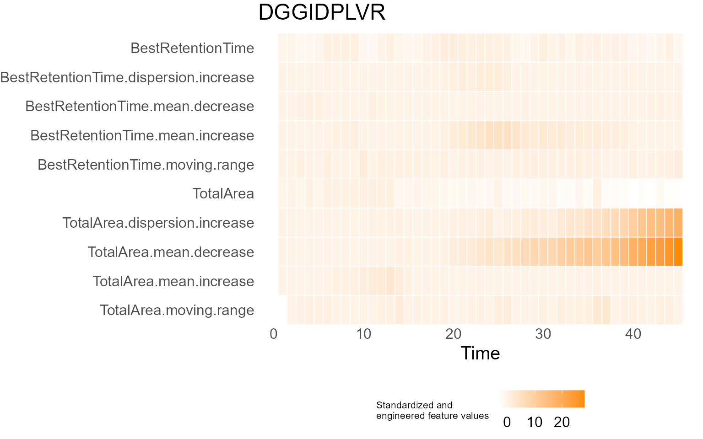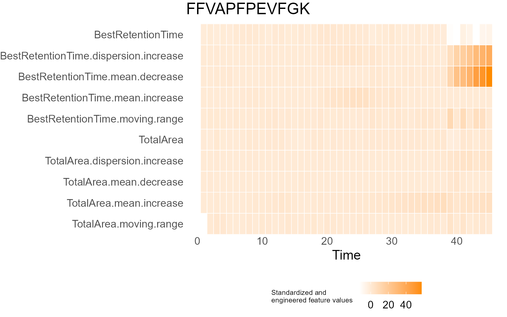

 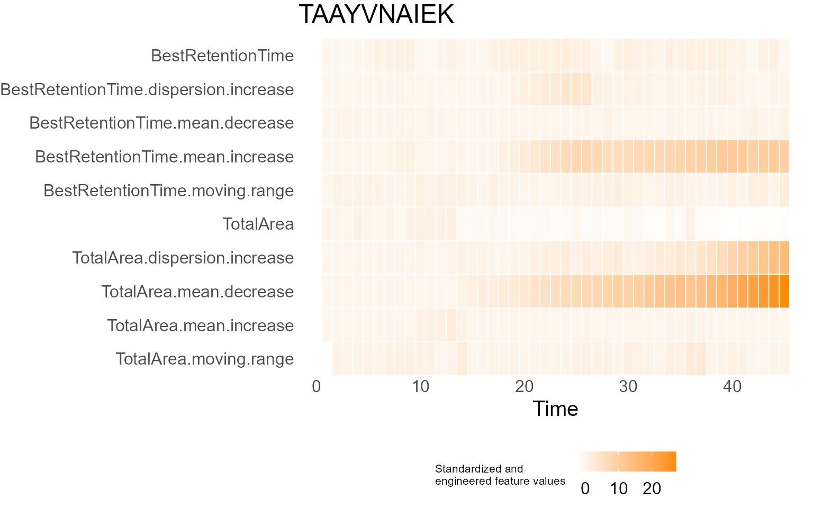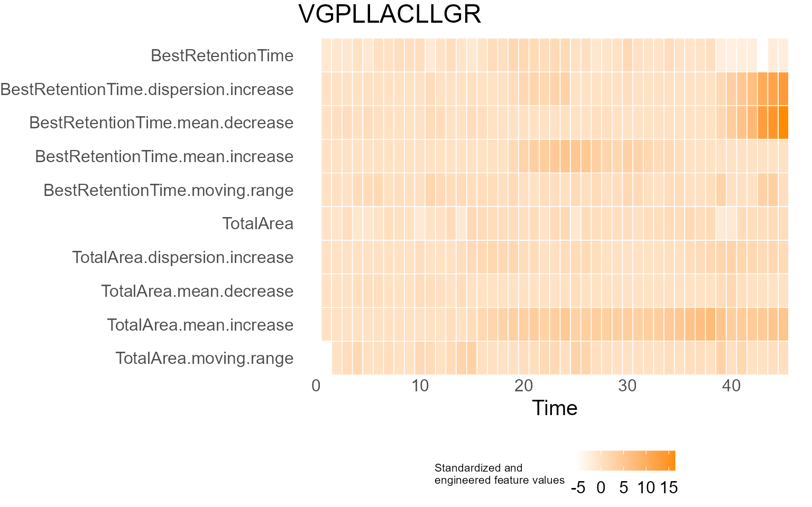
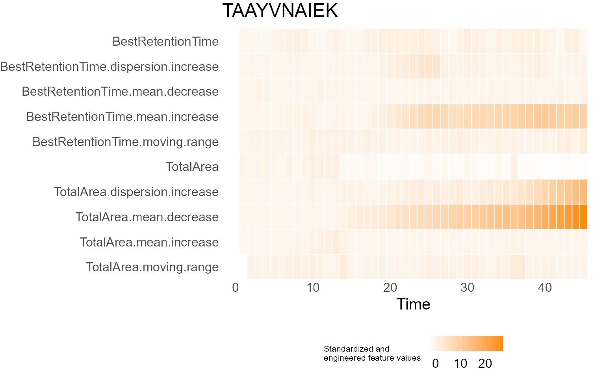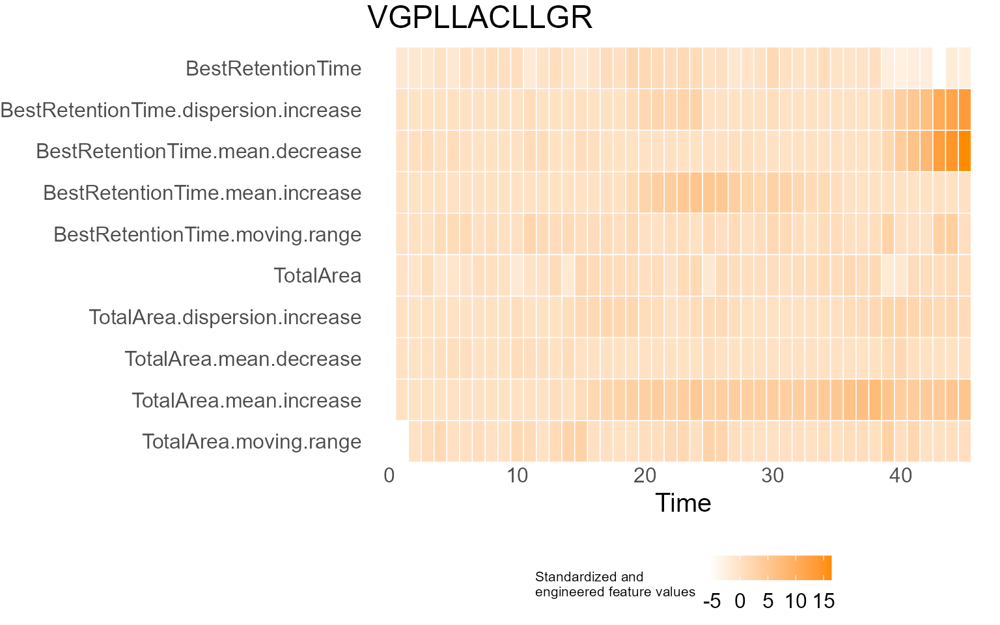 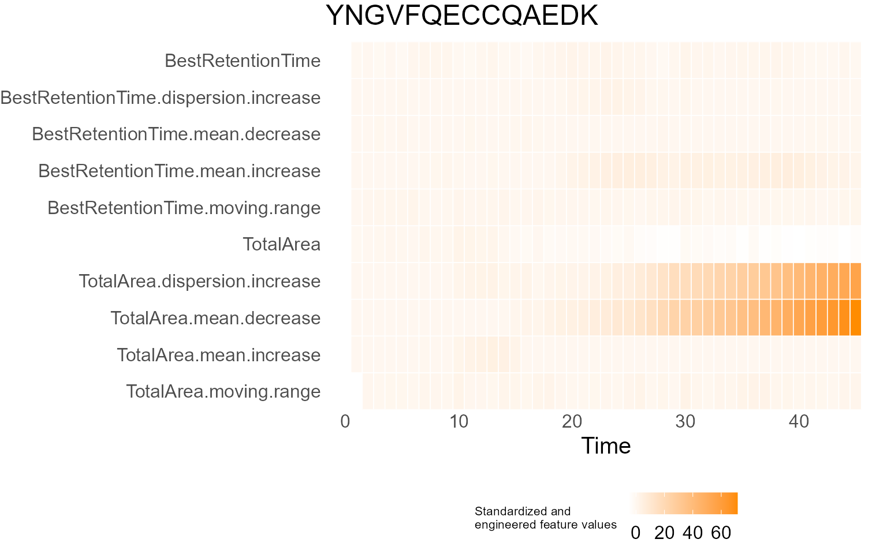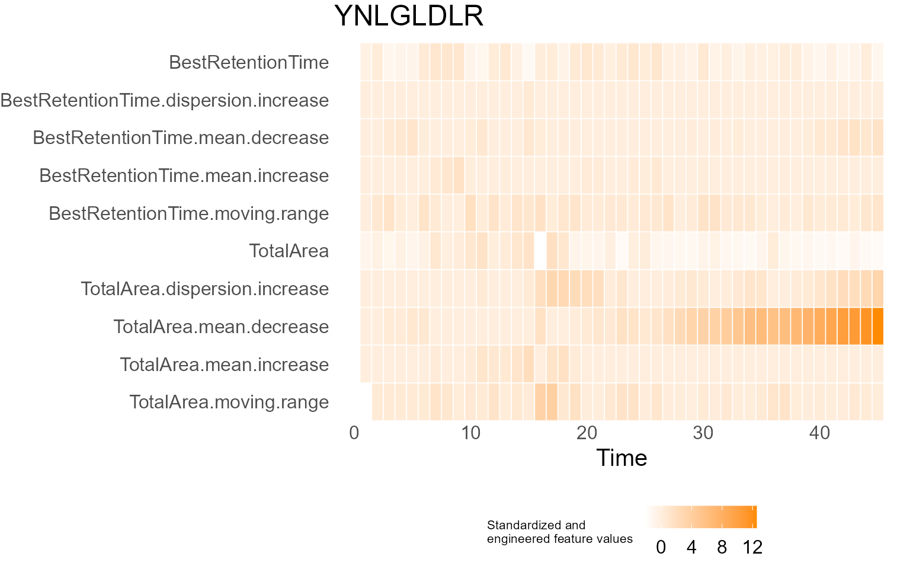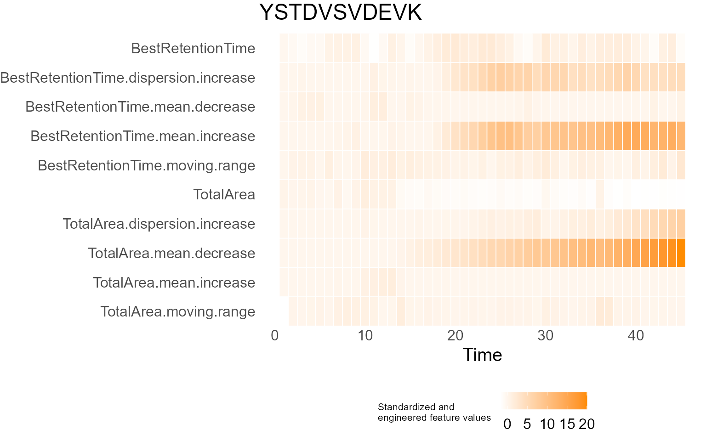
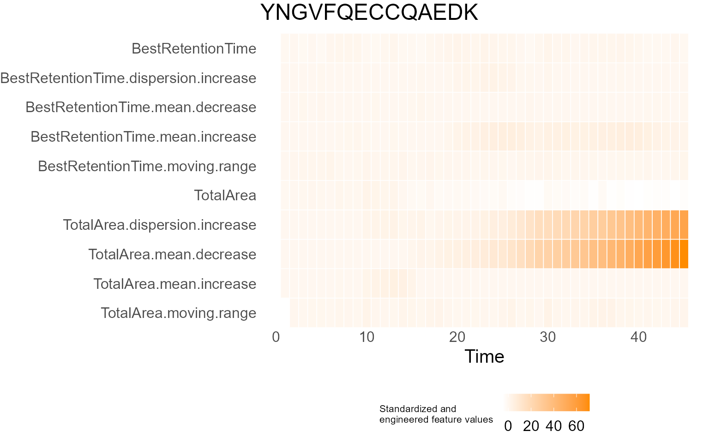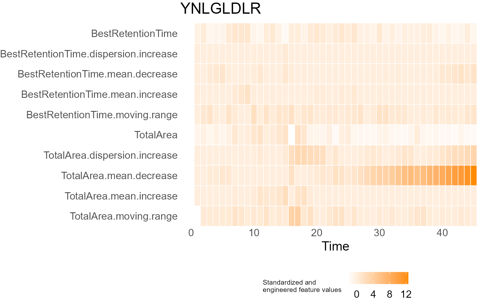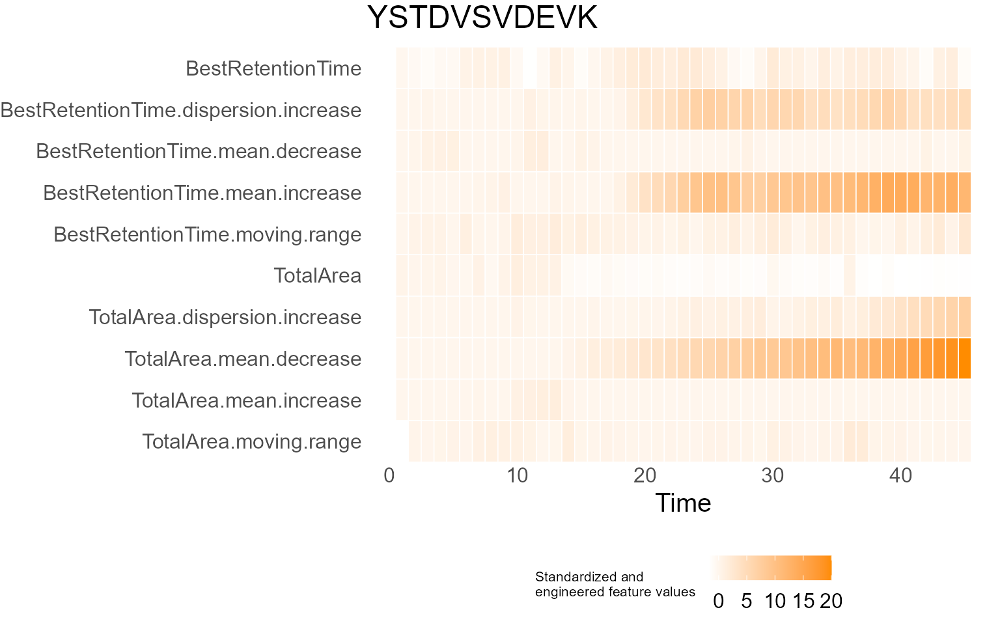
Output
Plots created by the core plot functions are generate by
plotly which is an R package for interactive plot
generation. These interactive plots created by MSstatsQC,
can be saved as an html file using the save widget function. If the user
wants to save a static png file, then export function can
be used. The outputs of other MSstatsQC functions are generated by
ggplot2 package and saving those outputs would require
using ggsave function.
Example
# Saving plots generated by plotly
p <- XmRChart(data,
peptide = "TAAYVNAIEK", L = 1, U = 20, metric = "BestRetentionTime", normalization = FALSE,
ytitle = "X Chart : retention time", type = "mean", selectMean = NULL, selectSD = NULL
)
htmlwidgets::saveWidget(p, "Aplot.html")
export(p, file = "Aplot.png")
# Saving plots generated by ggplot2
p <- RiverPlot(data, L = 1, U = 20)
ggsave(filename = "Summary.pdf", plot = p)
# or
ggsave(filename = "Summary.png", plot = p)Project website
Please use MSstats.org/MSstatsQC and github repository and github page for further details about this tool.
Question and issues
Please use Google group if you want to file bug reports or feature requests.
Citation
Please cite MSstatsQC:
- Dogu, E., Mohammad-Taheri, S., Abbatiello, S. E., Bereman, M. S., MacLean, B., Schilling, B., & Vitek, O. (2017). MSstatsQC: Longitudinal system suitability monitoring and quality control for targeted proteomic experiments. Molecular & Cellular Proteomics, 16(7), 1335-1347. https://doi.org/10.1074/mcp.M116.064774
- Dogu, E., Taheri, S. M., Olivella, R., Marty, F., Lienert, I., Reiter, L., … & Vitek, O. (2019). MSstatsQC 2.0: R/Bioconductor package for statistical quality control of mass spectrometry-based proteomics experiments. Journal of proteome research, 18(2), 678-686. https://doi.org/10.1021/acs.jproteome.8b00732
- Dogu, E., Gupta, S, Olivella, R., Sabido, E. & Vitek, O. (2026). MSstatsQC-ML: A supervised machine learning approach to monitor system suitability and quality control in mass spectrometry-based proteomics. Under Review.
Session information
sessionInfo()
#> R version 4.5.1 (2025-06-13 ucrt)
#> Platform: x86_64-w64-mingw32/x64
#> Running under: Windows 11 x64 (build 26100)
#>
#> Matrix products: default
#> LAPACK version 3.12.1
#>
#> locale:
#> [1] LC_COLLATE=English_United Kingdom.utf8
#> [2] LC_CTYPE=English_United Kingdom.utf8
#> [3] LC_MONETARY=English_United Kingdom.utf8
#> [4] LC_NUMERIC=C
#> [5] LC_TIME=English_United Kingdom.utf8
#>
#> time zone: Europe/Istanbul
#> tzcode source: internal
#>
#> attached base packages:
#> [1] stats graphics grDevices utils datasets methods base
#>
#> other attached packages:
#> [1] MSstatsQC_2.29.2
#>
#> loaded via a namespace (and not attached):
#> [1] RColorBrewer_1.1-3 vcd_1.4-13
#> [3] rstudioapi_0.18.0 jsonlite_2.0.0
#> [5] MultiAssayExperiment_1.36.1 magrittr_2.0.4
#> [7] farver_2.1.2 MALDIquant_1.22.3
#> [9] rmarkdown_2.30 fs_1.6.6
#> [11] ragg_1.5.0 vctrs_0.7.1
#> [13] RCurl_1.98-1.17 htmltools_0.5.9
#> [15] S4Arrays_1.8.1 BiocBaseUtils_1.12.0
#> [17] polynom_1.4-1 curl_7.0.0
#> [19] SparseArray_1.8.1 Formula_1.2-5
#> [21] mzID_1.48.0 sass_0.4.10
#> [23] bslib_0.10.0 htmlwidgets_1.6.4
#> [25] desc_1.4.3 plyr_1.8.9
#> [27] plotly_4.12.0 impute_1.82.0
#> [29] zoo_1.8-15 cachem_1.1.0
#> [31] sfsmisc_1.1-23 igraph_2.2.1
#> [33] mime_0.13 lifecycle_1.0.5
#> [35] iterators_1.0.14 pkgconfig_2.0.3
#> [37] Matrix_1.7-3 R6_2.6.1
#> [39] fastmap_1.2.0 shiny_1.12.1
#> [41] GenomeInfoDbData_1.2.14 rbibutils_2.4.1
#> [43] MatrixGenerics_1.22.0 clue_0.3-66
#> [45] digest_0.6.39 pcaMethods_2.0.0
#> [47] colorspace_2.1-2 FrF2_2.3-4
#> [49] S4Vectors_0.49.0 numbers_0.9-2
#> [51] crosstalk_1.2.2 textshaping_1.0.4
#> [53] GenomicRanges_1.60.0 labeling_0.4.3
#> [55] Spectra_1.20.1 qcmetrics_1.48.0
#> [57] mgcv_1.9-3 httr_1.4.7
#> [59] abind_1.4-8 compiler_4.5.1
#> [61] conf.design_2.0.0 bit64_4.6.0-1
#> [63] withr_3.0.2 doParallel_1.0.17
#> [65] pander_0.6.6 S7_0.2.1
#> [67] BiocParallel_1.42.2 carData_3.0-6
#> [69] MASS_7.3-65 DelayedArray_0.34.1
#> [71] scatterplot3d_0.3-44 mzR_2.42.0
#> [73] tools_4.5.1 PSMatch_1.14.0
#> [75] lmtest_0.9-40 otel_0.2.0
#> [77] httpuv_1.6.16 glue_1.8.0
#> [79] nlme_3.1-168 h2o_3.44.0.3
#> [81] promises_1.5.0 QFeatures_1.20.0
#> [83] grid_4.5.1 cluster_2.1.8.1
#> [85] reshape2_1.4.5 generics_0.1.4
#> [87] gtable_0.3.6 preprocessCore_1.70.0
#> [89] tidyr_1.3.2 data.table_1.18.2.1
#> [91] MetaboCoreUtils_1.18.1 car_3.1-5
#> [93] XVector_0.48.0 BiocGenerics_0.56.0
#> [95] foreach_1.5.2 pillar_1.11.1
#> [97] stringr_1.6.0 ggExtra_0.11.0
#> [99] limma_3.64.3 later_1.4.5
#> [101] splines_4.5.1 dplyr_1.2.0
#> [103] lattice_0.22-7 bit_4.6.0
#> [105] gmp_0.7-5 tidyselect_1.2.1
#> [107] miniUI_0.1.2 knitr_1.51
#> [109] IRanges_2.42.0 Seqinfo_1.0.0
#> [111] ProtGenerics_1.42.0 SummarizedExperiment_1.40.0
#> [113] stats4_4.5.1 xfun_0.56
#> [115] Biobase_2.68.0 statmod_1.5.1
#> [117] MSnbase_2.34.1 matrixStats_1.5.0
#> [119] stringi_1.8.7 UCSC.utils_1.4.0
#> [121] lazyeval_0.2.2 yaml_2.3.12
#> [123] evaluate_1.0.5 codetools_0.2-20
#> [125] MsCoreUtils_1.20.0 tibble_3.3.1
#> [127] BiocManager_1.30.27 cli_3.6.5
#> [129] affyio_1.78.0 xtable_1.8-4
#> [131] systemfonts_1.3.1 Rdpack_2.6.5
#> [133] jquerylib_0.1.4 Rcpp_1.1.1
#> [135] GenomeInfoDb_1.44.3 XML_3.99-0.20
#> [137] parallel_4.5.1 pkgdown_2.2.0
#> [139] ggplot2_4.0.2 DoE.base_1.2-5
#> [141] AnnotationFilter_1.34.0 bitops_1.0-9
#> [143] viridisLite_0.4.3 scales_1.4.0
#> [145] affy_1.86.0 ncdf4_1.24
#> [147] purrr_1.2.1 crayon_1.5.3
#> [149] combinat_0.0-8 rlang_1.1.7
#> [151] vsn_3.76.0 partitions_1.10-9